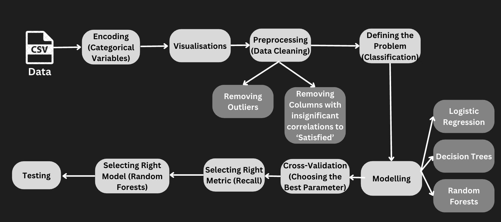

Consumer Satisfaction Analysis at Thomas Train Company
Customer satisfaction is everything, especially in the travel industry. If people don’t enjoy their journey, they have a higher probability of not coming back. That’s why this project digs into the “trains_dataset.csv” to understand what makes customers happy with ThomasTrain’s services, and how the marketing team can use that insight to keep passengers coming back.

Key Insights from the Data
- Delays (arrival and departure) were mostly short, with a few extreme outliers.
- Loyal customers were the most likely to respond to the survey, and most of them were satisfied.
- Work travelers were more satisfied than leisure travelers, likely due to punctuality preferences.
- Premium ticket holders were far happier than Economy or Smart class travelers.
Marketing & Operations Implications
- The survey is biased toward satisfied customers — more balanced collection methods are needed.
- Use incentives and follow-up messaging to increase participation from new or non-loyal users.
- Enable in-trip feedback using QR codes for real-time, broader feedback.
While premium services are well-received, Economy and Smart class passengers show dissatisfaction, highlighting a gap between expectations and delivery.
- Introduce loyalty campaigns like “Book 3 trips, get 1 upgrade.”
- Offer perks such as free Wi-Fi, refreshments, or seat upgrades.
- Send personalized deals based on customer behavior.
Delay Impact Analysis
Most delays were minor, but rare extreme delays harmed perception. These should be analyzed separately:
- Identify causes: weather, technical issues, staff shortages.
- Spot delay-prone routes and plan mitigations (better alerts, rerouting, etc.).
Predicting Customer Satisfaction with Machine Learning
To avoid survey limitations, we trained models to predict satisfaction:
- Logistic Regression
- Decision Tree
- Random Forest — best overall performance
Focus: minimize false negatives (i.e., missing unhappy users). Random Forest achieved:
- Recall: 0.93
- Accuracy: 0.95
- Precision: 0.96
- F1 Score: 0.94
Conclusion
This project combined data exploration, visualization, and predictive modeling to uncover key drivers of customer satisfaction. It showed the importance of reducing survey bias, segmenting customers thoughtfully, and leveraging machine learning for smarter marketing and operations decisions. In short, data-driven strategies = stronger retention and service excellence.
← Back to Home
🔗 View on GitHub